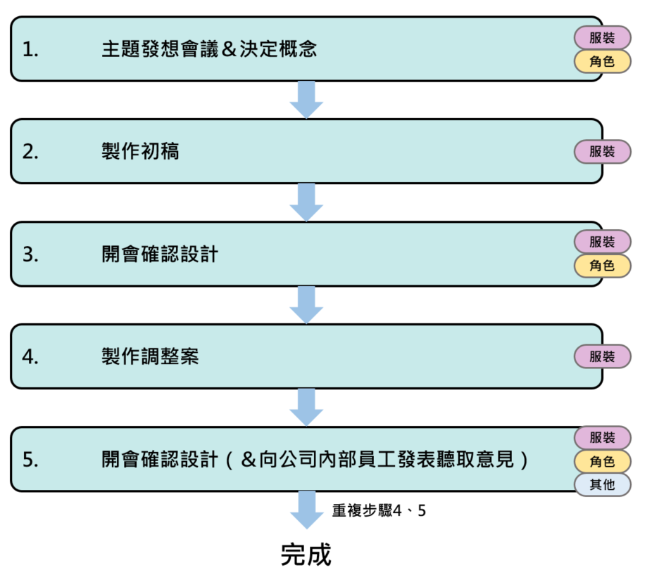

minute(s) read
由Colorful Palette與SEGA合作推出的「世界計畫 Colorful Stage！feat. 初音ミク」（以下簡稱世界計畫），於2023年9月迎來了三週年紀念。為了配合角色們三年來的成長軌跡，進行了團體服裝的更新。本次，我們採訪了負責服裝製作的團隊，深入了解新團體服裝的特色和亮點。
經過數十次的討論和調整，最終確定了現在的設計。
——首先，能告訴我們服裝設計的製作團隊編制嗎？
世界計畫的插畫團隊大致分為「角色團隊」「服裝團隊」「背景團隊」「Live2D團隊」四個部分。雖然有著明確的分工，但團隊之間的氣氛其實是相當易於溝通討論的，因此大家是互相協助進行創作的。
這次服裝製作，主要由服裝團隊主導，並與角色團隊多次討論，共同推進設計製作。
——新團體服裝的設計過程是如何呢？
首先，服裝團隊和角色團隊會決定每個團體的服裝設計方向。在討論時，大家會帶來各自想像的圖像，討論和想要表達的氛圍相襯的關鍵詞，從零開始進行摸索並磨合調整。
經過多次會議，大致確定了主要概念和關鍵詞後，服裝團隊開始進行設計。
初稿完成後，再次與角色團隊討論「各團體間要呈現多少統一感」、「四人並排時的是否有足夠的平衡感」等細節，進行數次調整。
有時，也會向腳本團隊或是社內喜歡該團體的人發表討論會聽取意見，反覆地討論和調整，最終形成了現在的設計。

——在這次服裝更新中有特別重視哪些方面嗎？
由於這次團體服裝是為了慶祝三週年而推出的，我們希望設計能反映角色們至今的成長和軌跡。因為即使是小配件或輪廓的微小差異也會大大影響整體的印象，所以我們在調整時，會不斷問自己「現在的設計是否能100％傳達角色魅力？」算上各處的細節調整，一套服裝甚至會經歷數十次的討論和修改。
此外，團體服裝的更新是從三週年公開約一年半前開始製作，所以也相當注重「公開時設計不會顯得過時」這件事。在確認設計的會議中，我們多次討論「一年半後這種風格可能不流行」、「選擇不過於受流行影響的」等等問題。因為無法準確預測公開時的流行風潮，也會有感受到些許困難的時候，但我們仍時常參考社交媒體和時尚網站，不斷追蹤最新的時尚和趨勢來進行設計。
每套服裝背後的巧思
——請告訴我們這次服裝更新中每組服裝的概念，以及其中又投注了什麼樣的心思呢。
■ Leo/need
和初期團體服裝相同，我們希望保留身為學生團體的她們所擁有的「青春感」和「學生風格」而進行設計。穿上同款式的學生制服外套，是以「專屬於Leo/need的學生制服」為概念設計的。為了增添樂團特色，配件和靴子上使用了皮革材質，增添酷炫和搖滾的感覺。作為她們珍視的回憶之一，「星星」的元素也以不同的形式點綴在各自的服裝上。
此外，她們正向著成為職業的夢想一步步邁進，我們也希望能在設計中反映這個現狀和她們的意念。更新後的服裝使用了更貼身的制服外套和更穩重的顏色，與初期團體服裝相比，是否更能感受到一種現實感、以及意志堅強的印象呢。這是因為我們希望在設計中表達她們「不讓成為職業只是一個單純的夢」的決心。

一歌：外套上的吊飾
咲希：襪子邊邊有星星紋樣
穗波：臂帶上扣的裝飾
志步：摺起來的袖子上有星星紋樣
■ MORE MORE JUMP！
初期團體服裝以「王道偶像」為概念，設計了許多褶邊裝飾的可愛服裝。這次更新，我們想要呈現更加磨練過後的印象，因此以流行且簡約的服裝為目標進行設計的。以向未來展翅而行的她們為意象，選用清新的水藍和白色為主色調。通過減少整體色彩的使用數量並將角色代表色作為點綴，使得服裝在可愛中也透出成熟感。她們的標誌「三葉草」作為亮點在頭部和腰間閃耀。
此外，透過統一胸前鈕扣、袖子褶邊和袖口的形狀，設計上進一步增強了作為一個團體的整體印象。儘管乍看之下服裝類似，但我們在領子和裙子的形狀等輪廓細節上下了功夫，讓每個人都有獨特點，且將她們各自的魅力發揮出來。

みのり：波浪狀加上有個比較凹進去的缺口，有點圓潤的感覺
遥：形狀相似不過整體更加銳利的感覺！
愛莉：整題就是荷葉邊的感覺超可愛！
雫：領口看起來很像蝴蝶很優美
■ Vivid BAD SQUAD
成立團體至今他們的私服也兼作團體服裝。這次重新製作了專門用於表演的團體服裝，以區別於私服。我們設計了更帥氣的服裝，希望能有時髦且令人耳目一新的感受。此外，我們也將她們在追夢途中所感受到的情感和心境變化融入服裝元素中。她們仍在實現夢想的路上，也因此我們沒有完全換新設計，而是保留了一些讓人回想起初期團體服裝的元素。
同時，考慮了她們作為一個團隊共同追逐遠大夢想的現狀，衣裝製作上比以往更注重團隊的整體感。為了讓四個人並排時能讓人感受到【Vivid BAD SQUAD】的風格，我們努力摸索「凸顯各自個性的風格」和「作為四人團隊統一感」的平衡點。在使用各自的代表色的同時，也巧妙地加入了Vivid BAD SQUAD的團體代表色——鮮明的粉紅色(Vivid Pink)作為點綴。

こはね：腰帶
杏：長褲兩邊以及腰帶上的字
彰人：褲子上的綁帶以及繩帶
冬弥：領子上的標籤
■ Wonderlands×Showtime
WS的更新團體服裝是所有團體內，保留了最多初期團體服裝的影子。他們製作的表演秀老少咸宜，我們希望繼續保持受孩子們喜愛的「表演演員的大哥哥、大姊姊」印象，在服裝上也能反映這點。因此在服裝設計上沒有做出太大變動，保留了活潑可愛的元素。然而，我們也希望反映他們走過的道路和成長過程，因此在設計中加入些比較成熟的要素，使用了更加沉穩的色調，力求製作出更加歷練過後的設計。
在每件服裝的某些部分，我們使用了共同的條紋圖案，讓人聯想到熱鬧的馬戲團。此外，我們還使用了相同色調的白色和調整了代表色的色調，以增強服裝全體的統一感，表達WS作為一個更加團結的表演團體的一體感。

<條紋>
司：衣服內的背心(亮黃、黃橙相間、斜背帶子(藍、淺藍相間)
えむ：領子延伸的布料、最外層的裙擺(粉、白相間)
寧々：左邊翻出來的領子(綠、墨綠相間)
類：蝴蝶結、右側有褶邊的衣襬內側，還有袖子邊邊(紫、深紫相間)
雖然沒有特別講，但這次更新除了白色外，我覺得黃色調也有被多用進每個人衣裝色彩，雖然不是團體色的鮮橙色，但這個小地方也感受到了團魂…！！
■ 25時、ナイトコードで。
在保留初期團體服裝的「水手服」、「暗黑感」等元素的同時，我們反映了她們行走至今發生的變化以及現在的心境。採用較大的襟口、頸部的V字線條、緞帶式領帶風的裝飾等等，融入水手服的元素。
她們背負的問題和煩惱的沉重感也和服裝相連結，使用了沉重的暗色調。同時，雖然在進程上有些緩慢，25時的成員們確實變得不再掩飾，而是更坦率地表現出真正的自我和情感。為了表達她們的內心，我們調整了形狀和顏色數量，使設計更為簡潔明快。服裝上共通裝飾上花卉圖案，根據她們的現狀和想法進行了不同的設計，以不同的花朵為主題。

目前看起來是沒有什麼定論，所以這裡也給出我自己的考察
奏->聖誕紅( Poinsettia)：給予祝福、祈禱幸運、我的心正在燃燒
まふゆ->鐵線蓮(Clematis florida)：束縛。常春藤(Ivy)：誠實、友情、不滅
絵名->白水仙(Daffodil)：自愛、驕傲、尊敬、神秘。納西瑟斯死後據說就是重生為白色水仙。
瑞希->雛菊(Daisy)：希望、和平、美人、純潔、和你相同的心情。
花真的好棒，可以包含好多感情在裡面…
未來的目標是？
——希望今後能創作出什麼樣的服裝呢？
我們將繼續重視角色的心情，同時根據舉辦活動的主題和氛圍，精心設計每一件服裝。隨著各個團體為了目標和夢想而積極行動，我們也希望服裝能夠與成長中的角色一同進化。我們將致力於提供更能突顯出她們優點和魅力的設計。
此外，隨著世界計畫迎來三週年，她們的旅程持續的途中，可能會採用與過去相似的主題，但即使是相同的主題，我們也希望能創造出完全不同的印象和魅力，以積極的態度進行設計。為了能向玩家展示角色的新魅力和透過服裝帶來的新體驗。我們團隊將團結一心，不斷挑戰自我。
感謝您一直以來對世界計畫的支持。